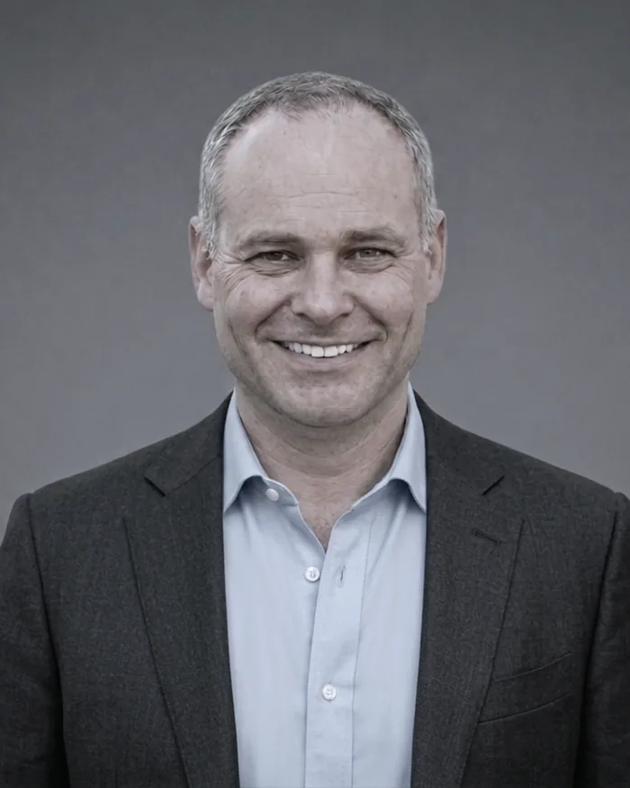

Partners and leadership team
Founding Partner · London Office
Jean-Benoît Terrasse leads the firm's London office and has spent more than three decades advising corporates, entrepreneurs, and investors on mergers and acquisitions, disposals, joint ventures, privatisations, and contested public transactions across Western Europe, the United States, and a broad range of emerging markets. He began advising independently in 2002 and co-founded Charcot Capital in 2008.
Three decades in advisory have only sharpened his instincts: prepare exhaustively, remain calm under pressure, and never mistake motion for progress.
Before Charcot Capital he held senior roles at JPMorgan and Baring Brothers, and served as an officer in the French Navy. Jean-Benoît is a graduate of Hautes Etudes Commerciales (HEC) in Paris. He works in French, English, Spanish, Portuguese, and Arabic.
Selected transactions
Public takeover: Takeover bid on Worms & Cie by Artemis
Privatisation: Privatisation of Maroc Telecom
Sell-side M&A: Disposal of Thales' testing instruments division
Buy-side M&A: Acquisition of Brasseries Internationales Holdings
Carve-out: Disposal of General Electric's train inspection activities to Caterpillar

Founding Partner · Paris Office
Clément Lavallard advises across the full spectrum of corporate finance, disposals, acquisitions, mergers, joint ventures, leveraged buyouts, takeover bids and defences, restructurings, and complex special situations, with particular depth in cross-border and multi-jurisdictional mandates. He partnered with Jean-Benoit Terrasse in 2002 and co-founded Charcot Capital in 2008.
Years spent living and working across New York, Paris, London, and Singapore have given him a global perspective, entrepreneurial mindset, and deep appreciation of cross-border business.
He established the firm's Asia presence in Singapore in 2011 and continues to draw on that network for cross-border mandates from his base in France. Clément is a graduate of Hautes Etudes Commerciales (HEC) in Paris. He speaks French, English, and German.
Selected transactions
Takeover defence: Sale of Mannesmann to Vodafone
Privatisation: Privatisation of Maroc Telecom
Public takeover: Takeover of Filofax
Sell-side M&A: Disposal of Jawamanis Rafinasi to Wilmar International
Buy-side M&A: Acquisition of the Salof Group by GE Oil and Gas
Partner · London Office
Marc van den Berg advises on mergers and acquisitions, disposals, joint ventures, and leveraged buyouts, and on principal investment alongside corporate and entrepreneurial clients, across both developed and emerging markets in Europe, Asia, and Latin America. He joined Charcot Capital at its formation in 2008.
Starting an investment banking career in 2008 teaches a particular kind of caution - he has never since taken a number at face value until he has checked it twice himself.
Marc began his career at Lehman Brothers and read Economics and Politics at the University of Edinburgh. He works in English, German, Dutch, and French.
Selected transactions
Carve-out: General Electric - disposal of assets in the transportation sector
Principal investment: Co-investment into Nao do Brasil
Buy-side M&A and IPO: Acquisition, LBO, and subsequent listing of Dockwise
Buy-side M&A: Acquisition, MBO, and refinancing of international hospitality group
Sell-side M&A: Exit of founder in international travel and event management business
Director · London Office
Thorsten Jabas leads transaction execution at Charcot Capital, running live mandates alongside the senior partners from preparation and positioning through to close. His vantage point is unusual for an adviser. He has been a chief financial officer of high-growth technology and medtech businesses and has built his own venture, and he began his career in 2005 at Lehman Brothers, Nomura, and Banco Santander, rising to Executive Director and placing more than $500m of debt securities.
Having sat in the chief financial officer's chair, he reads a management team's numbers the way a buyer will, before the buyer does.
Thorsten graduated magna cum laude in Finance from the University of Basel and works in English, German, and French.
Areas of focus
Sell-side M&A: Vendor Due Diligence (VDD), preparation and positioning of sell-side targets
Sell-side M&A: Equity story, buyer qualification, carve-out management
Capital raising: Investor engagement and capital raising (debt and equity)
Valuation: Financial modelling, valuation, fairness opinion, portfolio valuation
Transaction execution: Deal execution and process leadership
Get in touch
Senior partners are available to discuss any situation - a potential mandate, a question about market conditions, or simply to share perspective.